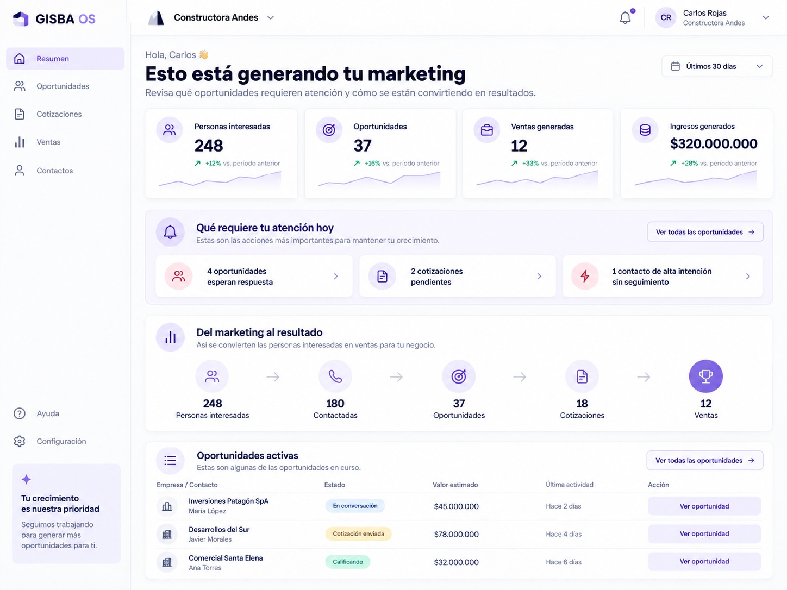

Software para agencias de marketing
Escala tu agencia sin multiplicar el trabajo operativo.
Centraliza clientes, campañas y decisiones. GISBA detecta qué necesita atención, recomienda qué hacer y mantiene a tu equipo y clientes coordinados.
 Hoy
HoyGISBA PulsePrioridades para hoy
- Kozan DigitalRendimiento cayó 18% en 7 días.Revisar →
- Virel EstrategiaPresupuesto esperando aprobación.Ver decisión →
- Nimwo MarketingReporte mensual listo.Enviar →
Alerta nuevaEl rendimiento cayó 18% en los últimos 7 días.
Campaña Meta Ads · Kozan Digital. Conviene revisar presupuesto y segmentación antes de continuar.
Aprobación registradaAumento de presupuesto +15%
Cliente: Virel Estrategia
Pendiente→Aprobado
✓ Cambio guardado en el historial
Se conecta con las herramientas que ya usa tu agencia
Disponibilidad según implementación.GISBA Pulse
Sabe qué necesita tu atención antes de buscarlo tú.
GISBA analiza lo que ocurre entre tus clientes y campañas, identifica cambios importantes y convierte la información en próximas acciones.
- Recomienda con contextoNo solo detecta un cambio: explica por qué importa y qué conviene revisar después.
- Mantiene el control en tu equipoTu agencia decide qué implementar, cuándo y quién se encarga.
- Registra cada decisiónLa recomendación y la decisión quedan conectadas para mantener el contexto.
GISBA PulseCuenta demo · E-commerce · Meta Ads
Señal relevante
El costo por resultado aumentó 18% durante los últimos 7 días.
CPA +18%
- 01DetectaEl deterioro comenzó hace aproximadamente 3 días.
- 02ExplicaLa caída se concentra en audiencias frías y dos creatividades de menor rendimiento.
- 03RecomiendaRevisar segmentación y creatividades antes de aumentar presupuesto.
Adaptado a cada tipo de negocio
Cada negocio tiene un funnel distinto.
GISBA adapta métricas, alertas y recomendaciones a su modelo de negocio, para que te enfoques en lo que realmente importa.

Cómo funciona
De datos dispersos a decisiones claras.
GISBA conecta el contexto de cada cuenta para que tu agencia sepa qué requiere atención, pueda decidir qué hacer y mantenga cada acción conectada.
Contexto
Reúne el contexto
Campañas, métricas, decisiones y actividad reciente de cada cuenta quedan conectadas.
Prioridad
Prioriza lo que requiere atención
GISBA identifica señales relevantes y recomienda dónde conviene actuar primero.
Decisión
Tu agencia decide y coordina
Tu equipo revisa la recomendación, asigna responsables, coordina con el cliente y define el siguiente paso.
Trazabilidad
Mantén la trazabilidad
La decisión, la ejecución y el resultado quedan conectados para que equipo y cliente mantengan contexto.
Experiencia del cliente
Así lo ve tu cliente.
Resultados, prioridades, aprobaciones y conversaciones en una experiencia simple, conectada con la operación de tu agencia.
